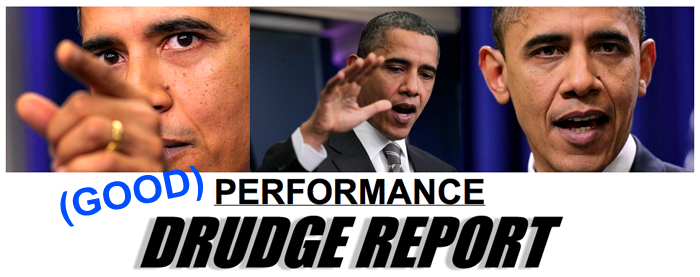

Obama's election campaign message for 2012
by phil on Wednesday Dec 8, 2010 4:50 PM

He's back!
Obama has finally got his so-called mojo back. In his press conference on the Tax Compromise, he sets the tone for what I believe will be his message all the way up to the election, that he's the sane one. Here is the money line: "Well, let me say that on the Republican side, this is their holy grail, these tax cuts for the wealthy. This is -- seems to be their central economic doctrine." It's so sarcastic and condescending. But he does this against a backdrop of essentially backslapping liberals for not being willing to compromise.
Between now and 2012, he's going to play the weary, strict dad, who tells his children (the Dem and Rep wings of Congress) how they have to cast aside the things they want for the good of the family (the American people). If his 2008 campaign was all about energizing the base, his 2012 campaign is about energizing the middle. He's essentially appealing to the "Rally to Restore Sanity" crowd and portions of the Tea Party, who also agree that both Democrats and Republicans are crazy.
His press conference even drew praise from the DrudgeReport, who placed three commanding photos of Obama atop a headline, "PERFORMANCE." It was almost like he left out the word "GOOD" in parenthesis before it.
So, it all makes sense now. This parlays with my theory of Obama being a zen self-actualizer. He spent 2008-2010 expressing himeself, seeing what his strengths and weaknesses were, and understanding the dynamic of the White House. Now that the stage is set for real, with Congress's demographics locked into place for the next two years, it's all about execution, execution, execution. Obama has realized that his number one talent is deal-making and steadfastness, and he's going to beat that message into the American Public. Palin is cuckoo, so this strategy will accentuate Obama's maturity. And Romney is just a less exciting version of the calm CEO-dad. Obama's got this in the bag.